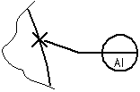

Datum Target command
Datum Target command
Places a datum target on model elements.
-
Lines
-
Arcs
-
Circles
-
Ellipses
-
Curves
-
Datum point symbols
-
In free space

Changing the appearance of datum target annotations
You can change the symbol type (moveable or non-moveable), datum point shape (rectangle, circle, or point), and show the datum area and specify its size, using options on the Datum Target command bar.
You can change the terminator type using the Datum Target Properties dialog box.
How do I
Place a feature control frame or datum frameDefine feature control frame content
Example: Add symbols to a feature control frame
Save a feature control frame
Activate a saved feature control frame
Place a datum target
Learn more
Geometric tolerancingLook up more details
Manipulating feature control framesFeature Control Frame command
Feature Control Frame command bar
Feature Control Frame Properties dialog box
General tab (Feature Control Frame Properties dialog box)
Datum Frame command
Datum Frame command bar
Datum Frame Properties dialog box
General tab (Datum Frame Properties dialog box)
Datum Target command bar
Datum Target Properties dialog box
General tab (Datum Target Properties dialog box)